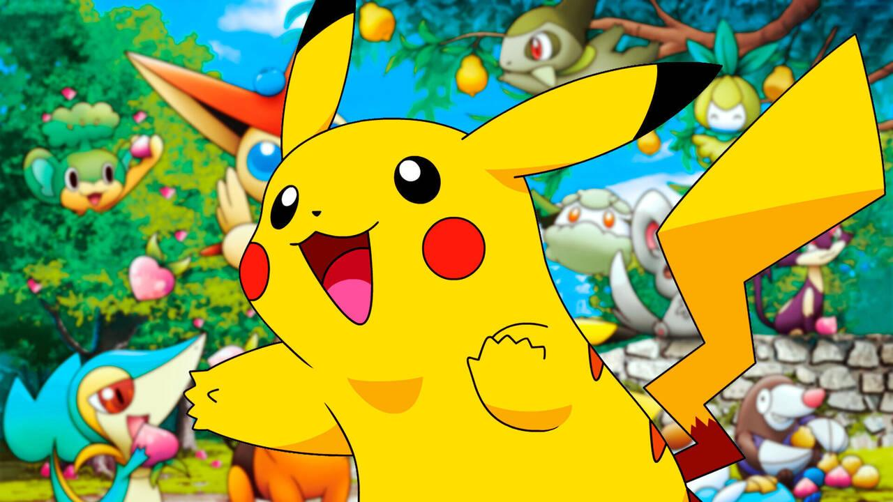

Pokémon es una popular serie de videojuegos desarrollada por Game Freak y publicada por Nintendo. El jugador asume el papel de un entrenador Pokémon, cuya misión es capturar criaturas llamadas Pokémon, entrenarlas y competir en batallas para convertirse en el mejor entrenador del mundo.

Características del juego:
Captura y entrena más de 100 (¡y ahora más de 1000!) especies diferentes de Pokémon.
Explora un mundo lleno de ciudades, rutas, gimnasios y secretos.
Combates por turnos con estrategia, tipos de Pokémon y movimientos únicos.
Intercambio de Pokémon entre jugadores mediante cable, conexión local o en línea.
Objetivo principal: derrotar a los líderes de gimnasio, vencer al Alto Mando y completar la Pokédex.
Desde su debut en 1996 con Pokémon Rojo y Azul, la franquicia ha crecido hasta convertirse en una de las más exitosas del mundo, con videojuegos, series animadas, películas, cartas y mucho más.